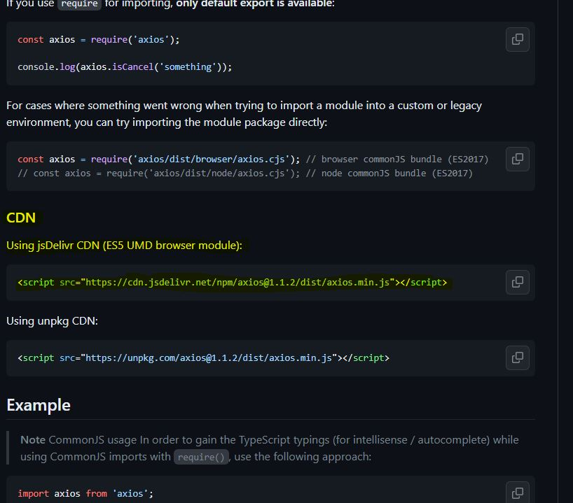
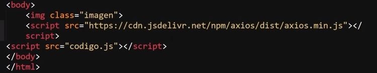
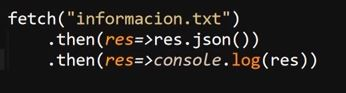
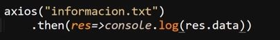
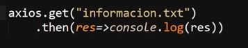
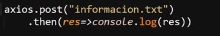
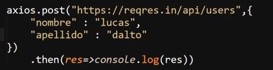
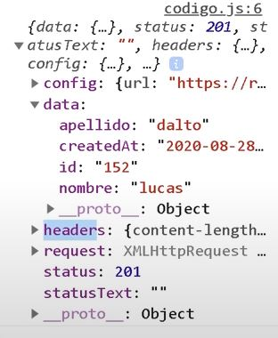
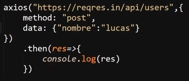

Librería Axios
Esta sección se trata del unico elemento no nativo que se vera en el curso, se trata de la forma más moderna de trabajar con las peticiones de una paguina web, de hecho la implementación de esta biblioteca se recomienda para aquellas ocaciones en las que el proyecto va a realizar un gran numero de peticiones al servidor o necesia de cargar elementos de un gran peso, ya que en teminos de codigo esta se encuentra extremadamente optimizada y mejora el desempeño de "fetch", mientras en teminos funcionales no hace una gran diferencia en latencia o tiempos de carga pero al estar mejor adecuada para muchas peticiones si puede llegar a hacer una diferencia, por su lado el uso de "fetch" se recomienda en el caso de que se requiera usar las peticiones de una forma mucho más puntual o ocacional en el proyecto.
Instalación
Ya que se trata de una biblioteca JavaScrip es necesario realizar una instalación en el proyecto, para esto es necesario acceder directamente a los archivos del repositorio de GitHub, ya sea desde el link aqui expresado o buscando en google "GitHub axios axios", de ese modo se puede acceder al repositorio, una vez dentro de este se deciende por el repositorio hasta llegar e la sección de instalación, en la que desenglosa todos los metodos disponibles.
El metodo empleado para este ejemplo es el "Using jsDelivr CDN (ES5 UMD browser module)" el cual brinda el codigo HTML para llamar los archivos directamente desde su servidor, por lo tanto lo unico que hay que hacer es copiar el codigo en cuastión es insertarlo dentro del documento html

Un aspecto importante es que el llamado a la librería debe de ubicarse entes que el llamado al archivo js del proyecto, esto debido a que el navegador debe aceder a la libreria para poder emplear las funciones de esta y utilizarlas en el docuemto JS del proyecto, si se accede a la librearia despues de ejecutar el documeto JS del proyecto, es decir si se llama primero al documento que a la librearia se generarian errores a tratar de usar las funciones.
Ejemplo

Nota: Las recomendaciones de google para los llamados de JS indican que, lo absolutamete indispensable como los llamados a "google Analytics" se ubican el el "head" del documeto, por otro lado los llamados comunes se ubiquen al final del documeto HTML y solo si se trata de un codigo inferior a 6 lineas se puede escribir en el head usando la etiqueta "script".
Uso
El uso de "axios" es muy similar al de "fetch", de hecho la principal diferencia entre ambos radica en que "axios" no retorna los datos encapsulados, por lo tanto no es necesario el realizar algun tipo de comberción en estos.
Ejemplo de Fetch

Ejemplo de Axios

En este ejmplo se puede observar el como el uso de "axios" simplifica aún más el codigo de la petición GET, desto debido a que como los datos no vienen encapsulados no es necesario realizar una comberción, por lo tanto se reduce el codigo a solo dos lineas.
Por su parte "axios" al igual que "fetch" permite el realizar una petición GET por defecto, es decir sino se espesifica el metodo se usara el metodo get, una de las ventajas de "axios" radica en que por si mismo este configura la petición, inclutendo los header de esta, por lo que no es necesario definir nada de eso, para definir el metodo de la petición es suficicente con utilizar la función acorde:
Get

POST

Por su parte para el envio de los datos por las peticiones POST simplemete hay que añadir los datos a enviar como un segundo parametro en el metodos .post, mientras que alutilizar el metodo GET al añadir los datos como segundo parametro estos no seran tomados como datos, si no como configuraciones de la petición, por lo que estos datos no se enviaran.
Ejemplo

Resultado

Nota: Con "axios" no es necesario serializar los datos, esto ya que este se enceutra perparado para trabajar con objetos JSON.
Existe una segunda forma de trabajar con el metodo POST, la cual es no utilizar el metodo ".post" ya establecido por "axios", si no en su lugar establecer el metodo y sus datos como configuraciones de la petición:

Ambas formas de trabajar las peticiones POST resultan en ek mismo resultado, sin embargo el metodo ".post" posee la ventaja de brindar un codigo más reducido.